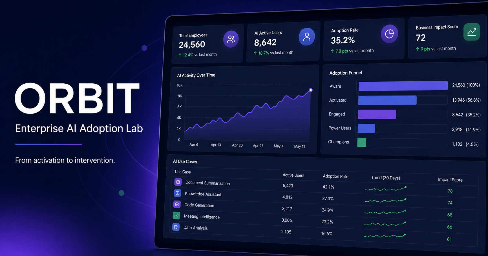

Vanity metrics obscure friction
Activation alone cannot distinguish exploration from durable workflow adoption.
Orbit is a plug-and-play adoption intelligence concept that transforms enterprise product telemetry into measurable risks and targeted go-to-market interventions.

Enterprise AI programs often report assigned seats and active users without explaining where habits break, which departments need help, or what marketing should do next. I designed Orbit to connect behavioral evidence directly to segment strategy.
Activation alone cannot distinguish exploration from durable workflow adoption.
Frequency, breadth, and departmental context reveal which intervention is most likely to work.
Each segment receives messaging, offer, channels, actions, owner, timing, and KPIs.
Enter the product name, define its activation event, choose a source, and add a CSV/JSON export. A standardized event contract turns different product exports into a common adoption model.
Each segment includes its audience rule, objective, core message, offer, channel mix, sequenced actions, owner, timing, and success metrics.
Role-based onboarding, manager email, checklist, and live setup clinic.
Triggered workflow challenge designed to create a second-week return habit.
Next-best-use-case recommendations, webinar, peer proof, and certification.
Champion council, enablement kit, executive recognition, and case studies.
Research sprint, friction audit, targeted workshop, and controlled recovery campaign.
Every playbook defines audience, owner, timing, success metrics, and holdout logic.
Filter companies and departments, inspect adoption risks, and open each GTM playbook.